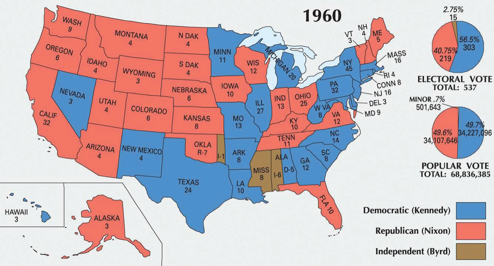
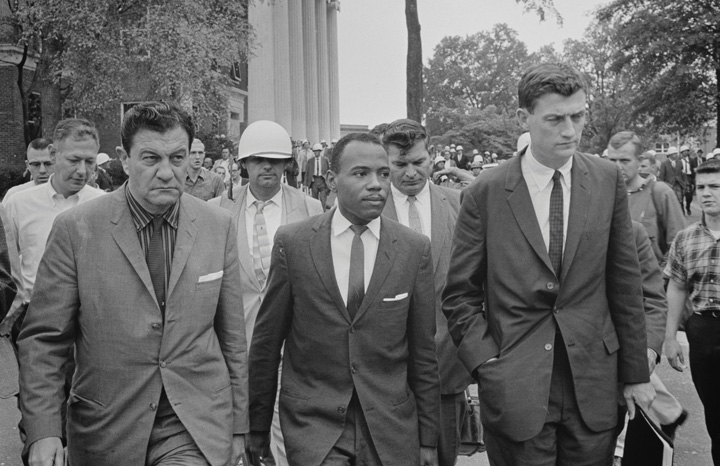
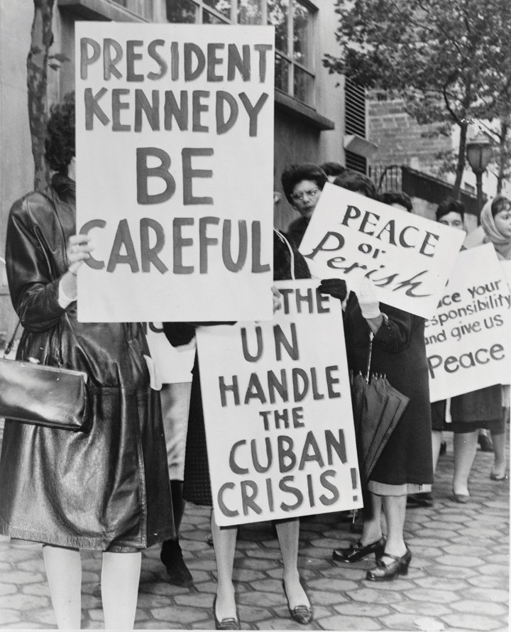
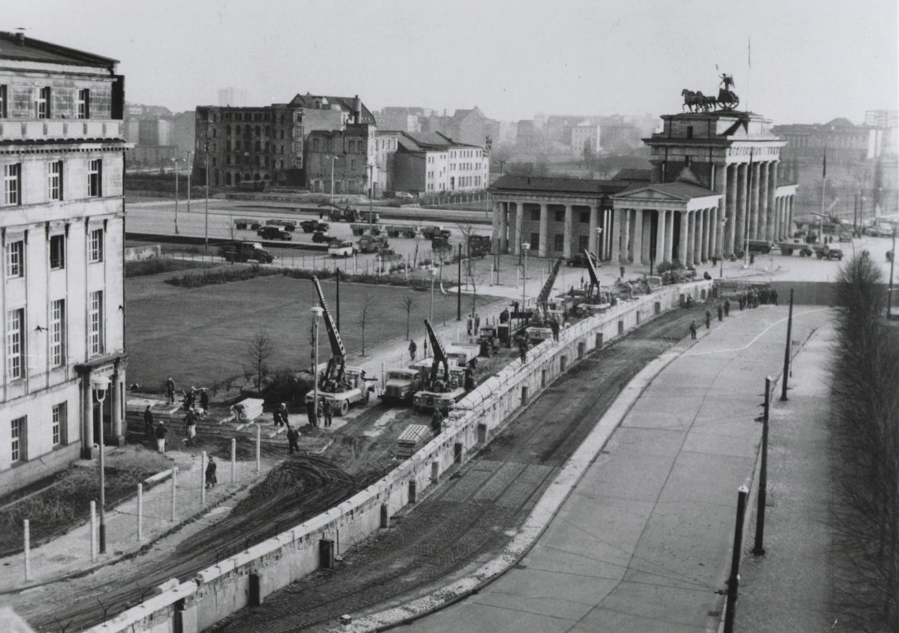
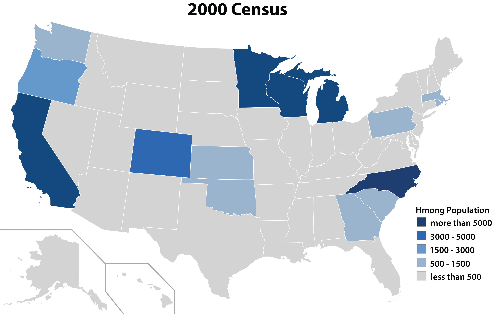

The historic image of President Kennedy demonstrates the frequent gulf between history and memory. Remembered as the quintessential liberal and civil rights supporter, Kennedy actually considered domestic matters as secondary to international affairs. He cared even less for the more liberal wing of his party. He avoided issues of civil rights until his last year in office and was reluctant to advocate the expansion of the welfare state, especially when compared to other the leaders of the Democratic Party.
Kennedy entered the 1960 Democratic primaries as the least popular Democratic contender among blacks and liberal Democrats. His nomination disappointed many Democrats who pointed out that even Richard Nixon had a stronger civil rights record due to a handful of supportive statements he had made while vice president. Richard Nixon had also backed a controversial attempt to introduce a civil rights plank into the Republican Party platform.
In general, both candidates appeared very similar in terms of issues and platforms. Many voters were ambivalent regarding the two candidates after several radio debates. Kennedy’s poise and princely appearance has been credited for throwing many votes his way after Nixon refused makeup during an infamous televised debate. However, there is little evidence by which to measure the importance of Kennedy’s physical appearance, the importance of which may have been embellished by the latter mystique surrounding the glamour of Camelot and the Kennedy White House.
The Kennedy campaign focused almost exclusively on issues of national security, attacking the Eisenhower administration, and Vice President Nixon by implication, of being too soft on Communism. For example, in one debate with Nixon, he accused the Eisenhower administration of permitting Communists to infiltrate America’s own backyard in Cuba and proposed that if he were president, he would support the overthrow of Fidel Castro. Nixon had been quietly planning a secret operation to do just that and could only meekly respond else he risk exposing the plot.
As a politician who won election to the House and Senate by red-baitingThe use of allegations to create the impression that a political rival is a supporter of Communist ideas without specifically making such a claim. his opponents and speaking to populist frustrations, Nixon could do little to respond now that he had been in the nation’s second-highest office for nearly eight years. Instead, he attempted to connect himself to the popular president under whom he had served. This tactic was derailed by a single comment Eisenhower had made when asked by a reporter for an example of how Nixon had contributed to his eight years in office. “Give me a week,” quipped Eisenhower who made few attempts to hide his ambivalence toward the vice president, “and I might think of one.”
As the general election neared, many of Nixon’s advisers suggested that the Republican candidate issue some kind of mild statement in favor of civil rights. Nixon’s refusal to do so helps to explain why he lost his lead in the polls among northern black communities. The other reason why Kennedy won more than 70 percent of the black vote in the general election was that JFK and his brother Robert Kennedy worked behind the scenes to secure the safety and release of Martin Luther King after he was sentenced to four months hard labor in Georgia for a minor traffic citation. The agreement was reached in private since Kennedy recognized that association with civil rights would spell disaster for his campaign among the majority of whites in America who still despised King in 1960.
Figure 10.16
The election of 1960 was an incredibly close contest. The third individual to receive electoral votes was Harry F. Byrd, a prominent Virginia politician and advocate of massive resistance to integration. Byrd was not an official candidate, meaning that presidential electors representing Mississippi and Alabama disregarded the votes that were cast in their state and voted for Byrd as a protest against what they believed were the liberal policies of both Nixon and Kennedy.
Martin Luther King Sr. responded to the news of his son’s release by reportedly exclaiming that it was time he and all other black Americans “take off their Nixon buttons” and support Kennedy. A last-minute campaign to spread the word about JFK’s intervention spread through black communities (but remained invisible to whites) and meant the difference in several key states like Illinois and Maryland where Kennedy won by the narrowest of margins. Nationally, Kennedy received only 0.2 percent more votes than Nixon, and had it not been for the urban vote in cities such as Chicago and Baltimore with black majorities, Nixon would have prevailed. Whether Kennedy actually owed his election to African American leaders and their last-minute campaign is a matter of debate; yet black leaders made sure to remind Kennedy of this possibility throughout his term.
President Kennedy entered the White House with great energy and electrified the public with his stirring inaugural address in which he challenged listeners to ask how they might serve their nation instead of asking what that nation might do for them. As a candidate, Kennedy exuded youthful vigor and optimism. As a president, he and his young family fascinated the American public. Students and adults alike took speed reading courses to try to match the President’s ability to read and comprehend ten pages per minute. Women mirrored the elegant style of Jackie Kennedy while men saw images of Kennedy with his young children, the first ever to grow up in the White House, as a reminder that they too could balance career and fatherhood. Balance would prove to be a difficult goal for the young president, however. The same inaugural that inspired a nation to service also committed the United States to “bear any burden” to contain the Communist threat. Although it would not yet be apparent in 1960, balancing domestic issues with global commitments would become the leading challenge of the decade.
As a candidate, Kennedy had challenged Americans to renew the nation’s pioneer spirit and spoke of the new decade as a New Frontier. As president, Kennedy would refer to his domestic programs as the New Frontier—a phrase that inspired hope for new possibilities and was vague enough for supporters to envision their own ideas. (Given the historic experiences of Native Americans, the phrases such as “frontier” and “pioneer spirit” had completely different connotations.) Liberals envisioned the New Frontier as the quest to end racial injustice and poverty, fulfilling the nation’s promise of liberty and prosperity. Kennedy supported modest spending for antipoverty programs and even began to speak in favor of civil rights, at least in vague terms calculated to lose few votes among white voters.
As President, Kennedy only agreed to meet privately with controversial black leaders such as Martin Luther King Jr. At one of these private meetings, the president asked King to draft a Second Emancipation Proclamation. He told King he would read and sign this document on January 1, 1963, one hundred years after Lincoln outlawed slavery throughout the Confederacy. King obliged, but Kennedy quickly recognized that such an overt sign of support for King—still hated among most Southern whites and a controversial figure throughout the rest of America—would cost him votes. JFK avoided the civil rights leader until New Year’s Day had passed without any statement from Kennedy. For African Americans, if Kennedy was not even willing to honor Lincoln and commemorate the historic end to slavery, it was doubtful that the New Frontier would challenge contemporary barriers of racial prejudice.
Kennedy also avoided women’s leaders who sought the president’s support for the Equal Rights Amendment, which they had introduced each year beginning in the 1920s. Pressed by Eleanor Roosevelt to offer at least moderate support for women’s issues, Kennedy appointed the former First Lady to lead a Presidential Commission on the Status of WomenA 1961 committee originally led by Eleanor Roosevelt that considered hundreds of pieces of legislation relating to the condition of women. Composed of prominent men and women who were relatively conservative in their views on gender, the commission issued a report detailing the advances of women but recognized continuing inequalities in fields such as education and labor. in December of 1961. Roosevelt passed away the following year, but the Commission continued to reflect the relatively conservative stance of the older generation of women and men who led the proceedings. Kennedy interpreted the committee’s findings as a validation of traditional gender roles.
By 1920, women had attended college in roughly equal numbers as men and were nearly as likely to graduate. By mid-1950s, however, the percentage of women in college had dropped significantly. The number completing a degree was even lower as more and more women were encouraged to think of college as a place to meet a husband. Women represented less than one-fourth of college graduates in 1950. The majority of women in coeducational schools was pursuing degrees in home economics or enrolled to become medical assistants or secretaries. Even though the nation believed it was waging a war to best the Soviets in science and engineering, women who pursued careers in these fields were sometimes accused of being un-American. These women pointed out that the Soviets encouraged women to pursue science and math, challenging Americans to reconsider the patriotism of those who would limit the nation to only half of its human resources. By the early 1960s, women were again attending college in numbers comparable to men.
A major part of Kennedy’s New Frontier was dedicated to space exploration. In April 1961, the Soviets placed a man in orbit. Kennedy responded by committing the nation to sending a man to the moon by the end of the decade. Astronaut John Glenn would orbit the earth in February 1962, and on July 20, 1969, Neil Armstrong became the first human to land on the moon. Most of Kennedy’s New Frontier programs were quite terrestrial in comparison to his aggressive funding for space exploration. Kennedy was cautious in his support for increasing federal aid for education and provided only limited support for plans to provide universal health care. The most significant liberal measure that passed Congress during the Kennedy administration was an increase in the minimum wage to $1.25 an hour.
Figure 10.17

President Kennedy greets young men and women who were among the first volunteers for the Peace Corps.
The failure of the Democrats to pass a number of liberal domestic programs was at least partially due to Kennedy’s belief that domestic issues were secondary to the threat of Communism. At one point, Kennedy openly scoffed at the notion that minimum wage was an increasingly important issue compared to the Cold War in Cuba with an infamous and profanity-laced remark to Richard Nixon. Publicly, however, Kennedy maintained the support of the working class by cultivating his image as an ally of labor.
A handful of liberal programs the Kennedy administration backed, such as public housing, likely did more to aid contractors and union workers than the poor. These urban renewal programs replaced working-class neighborhoods with overpasses and highway projects, often intensifying ghettoization by concentrating the poor in blighted areas of the city. Kennedy also backed funding to aid economically depressed rural areas such as Appalachia. Direct aid for rural Appalachians passed Congress while relief for the urban poor found few supporters, something that demonstrated Congressional aid for the poor was more likely to pass if the American public believed the recipients of that aid were white. Although coal mining communities were home to numerous African Americans and recent immigrants, dictionaries included the word “white” in their definition of “Appalachian” until the 1980s.
Liberals tended to view the establishment of the Peace Corps as the most significant domestic program of the Kennedy administration. The program conciliated some of the more liberal members of the Democratic Party, especially once Sargent Shriver was appointed as the head of the new organization. Shriver was a relative of Kennedy’s through marriage and a popular figure within the liberal wing of the Democratic Party. Under Shriver’s guidance, the program matched young Americans with humanitarian programs in developing nations. Utilizing recent college graduates, the program cost relatively little and aided the image of the United States abroad while providing young Americans with the opportunity to travel the world and encounter new perspectives. The Kennedy administration also supported environmental legislation protecting forests and wetlands as well as federal aid for public schools, but these programs failed in Congress. While Kennedy’s youthful image and public persona did much to inspire Americans, there were few domestic programs beyond mild increases in public housing, Social Security, and the minimum wage for which the president could take credit.
The problem for liberals was that Kennedy was a politician first, a moderate second, and a liberal only when speaking to solidly Democratic audiences. Perhaps more importantly, Kennedy’s Congress had a Democratic majority in name alone. The Democrats were fractured among Northern liberals and Southern conservatives. The latter group disdained the expansion of liberal government programs almost as much as they loathed civil rights legislation. Southern Democrats regularly sided with Republicans on domestic issues, and this division proved fatal to Kennedy’s proposals for medical insurance for seniors, public housing, and federal aid for education. In each case, the same coalition of conservative Southern Democrats and Republicans who had blocked Truman’s more liberal policies also derailed Kennedy’s ideas. In the end, this fracture even proved fatal to Kennedy himself. The purpose of his ill-fated trip to Dallas in 1963 was to try to bridge the divide between conservative Texas Democrats who opposed civil rights and other liberal initiatives and the progressive wing of the local party who favored such measures.
Figure 10.18

Civil rights activists were trained to protect their head and vital organs to prevent paralyzing damage from those who used violence against them. This photo shows an individual who protested segregation in Knoxville, Tennessee, surrounded by a hostile crowd.
As demonstrated during the Double-V campaign of the 1940s, the younger generation was more inclined to utilize direct confrontation to promote civil rights. In 1960, four black freshmen at the historically black North Carolina A&T in Greensboro decided one night that they had enough of legal challenges by the NAACP and white judges counseling patience with the deliberate delays that resulted in declarations of “all deliberate speed.” The next morning, the young men went across the street to the local Woolworth drug store where they were only permitted “sack service.” The students sat at the counter declaring they would not leave until they were arrested or served. Neither of these things occurred.
The young men occupied the lunch counter and then returned to their dorm where news of their action spread and attracted other students. That night, the students began planning what would become the Greensboro Sit-InsA sit-in launched by students at North Carolina A&T that quickly spread to over one hundred cities and led to the formation of the Student Non-Violent Coordinating Committee.. They coordinated class and work schedules around times when they could occupy each of the seats at the Woolworth counter. If they all stuck together, they reasoned, they could effectively shut down the lunch counter until it ended its discriminatory policy or went out of business. What made Greensboro so different from the dozen-and-a-half previous lunch counter demonstrations waged across the country prior to this time was that this demonstration spread to over one hundred cities within a few months. Before long, white and black students at campuses that had only recently admitted black students, such as the University of Texas at Austin, were holding sit-ins together.
The original Greensboro sit-in was ironically also much less organized than many previous campaigns. In Nashville, organizers had first created lists of more than five hundred volunteers and secured a network of vehicles and a map of targeted restaurants and lunch counters. Veteran NAACP organizer and the unofficial leader of King’s SCLC, Ella BakerOne of the most important civil rights leaders, Baker organized dozens of local, regional, and national civil rights campaigns through her work with the NAACP and SCLC. She also formed the Student Non-Violent Coordinating Committee and facilitated the leadership of college students through that organization. recognized the spontaneous nature of the Greensboro sit-ins and the dozens of others launched by students and recognized that the new generation had started something special. The sit-ins were simple and direct; they spread rapidly because they needed less organization than boycotts of essential services like transportation. However, they also incurred greater danger as participants put their bodies where they were not wanted rather than withdrawing them from segregated bus seats where they were needed as customers. Black newspapers were cautious in their reporting of these protests; SCLC leaders expressed skepticism and even discouraged students given the use of violence against the students and the mass arrests in many cities. The NAACP Legal Defense Fund initially refused to defend the first students arrested, for fear of encouraging more students to participate. But Baker supported the students and called a meeting where she facilitated the founding of the Student Non-Violent Coordinating Committee (SNCC)Perhaps the most important civil rights organization in the 1960s, SNCC was led by college students who radicalized the civil rights movement by launching direct action campaigns such as sit-ins. SNCC members were willingly arrested for their activism but practiced nonviolence..
SNCC was unique because students served in every leadership position. Baker recognized students needed adult leaders to facilitate their meetings, especially given the demanding and transitory schedule of college life. But Baker also recognized that even the most well-meaning adult leaders would crush the independent spirit these young adults brought to the movement. The students were fearless, even reckless at times. While adults usually deferred to the conservative leadership of clergy and black civic officials, the students even challenged Martin Luther King Jr. himself. King was immediately impressed and recognized that the students were taking the initiative he and others had only spoken of taking. After some good-natured cajoling, King decided to participate in a student demonstration in Atlanta. This was King’s first deliberate step toward prison, and his arrest brought the Atlanta protest to the attention of the nation. After several arrests, King became a household name and even a celebrity following a fundraising concert held by Frank Sinatra at Carnegie Hall in New York.
In 1961, the union of college students and adult organizers hit its peak when James FarmerA founder and the first president of the Congress of Racial Equality, Farmer is best known for organizing the Freedom Rides of 1961, which tested the federal government’s ruling that segregation in interstate travel was illegal. became the leader of CORE and organized a series of Freedom Rides. In December 1960, the federal courts extended the prohibition against segregation in interstate travel to include waiting rooms and restaurants in bus terminals. Farmer organized groups of white and black students who were willing to test this court decision by sitting and eating together on buses and at terminals throughout the heart of Dixie. Dozens of Freedom Rides occurred throughout 1961, and hundreds of participants were jailed in violation of federal law.
Figure 10.19

Students from Florida A&M join CORE and others in protesting racial segregation at a Tallahassee movie theater in 1963.
The most famous of these Freedom Rides traveled through South Carolina and Georgia where local whites vowed the Freedom Riders would never make it through their communities with their lives. Officials in Rock Hill, South Carolina, where a dozen students had just been sentenced to hard labor for participating in a sit-in, actually defended the riders against violence and enforced their legal right to have a meal in the local bus station. A second mob greeted them at their first stop in Alabama and chased them all the way until Birmingham, when the bus suffered a flat tire. The driver of the bus parked and ran for his life while the mob firebombed and brutally attacked the Freedom Riders to the point that some of the young people were permanently disabled. Law enforcement belatedly arrived on scene and halted the violence, an arrangement that an FBI informant within the Birmingham Klan revealed was part of a deal made with local police wherein the mob would be given fifteen minutes of uninterrupted freedom to beat the Freedom Riders until they made their obligatory appearance.
Not satisfied with the damage they had done, members of the angry mob converged on the hospital where the Freedom Riders were taken and might have killed many of the participants had it not been for the efforts of hospital workers and a convoy of local blacks who had taken no oath of nonviolence. Although the police kept their distance, reporters from leading national newspapers trailed each of the Freedom Rides, and photos of burning Greyhound buses made worldwide news. Even Southern newspapers expressed dismay at the violence and some white Southerners began to question the morality of their worldview for the first time. For many liberal whites, the violence was disturbing and forced them to consider stronger measures to protect civil rights. At the same time, Kennedy and others resented the way these activists forced the issue and intruded upon their rosy image of America.
President John F. Kennedy called for Southern governors to assure “a friendly and dignified reception” for foreign diplomats of color visiting the United States. The governor of Virginia, where “massive resistance” to desegregation originated, promised to provide Southern courtesy to these guests. He paired his response with the suggestion that nonwhite diplomats identify themselves, else they be mistaken for nonwhite American citizens. College students at Baltimore’s Morgan State University and Towson University responded by challenging segregation in restaurants along the highways connecting the United Nations in New York City with the nation’s capital in Washington, DC. While the federal government did nothing to confront the discrimination faced by its own citizens, they ordered proprietors to treat all foreign delegates with the utmost courtesy. These sit-ins soon led to the integration of restaurants in Maryland and Delaware.
White leaders quickly learned that as long as they did not commit overt acts of violence, especially violence against middle-class college students, the media and nation would pay little heed to the protesters. Late in 1961, Albany, Georgia, became the epicenter of a SNCC campaign against segregation and prohibitions against black voters. White Southerners blamed the handful of white college students and other “Yankee agitators” on hand for creating the trouble. For the historian, it was a scene reminiscent of antebellum slaveholders who blamed Northern abolitionists for making slaves yearn for freedom. Albany, however, was a homegrown movement led and conducted by Southern blacks. But just as Northern abolitionists had only been “moved to wrath and tears” by the most horrible episodes of violence, whites in Albany recognized that if they refused to follow their scripted role as perpetrators of violence, white Northerners would tire of the issue. After all, Albany whites reasoned, segregation was widespread throughout the North.
Figure 10.20

Cartoonist Herb Block pointed out the hypocrisy of a nation that would not accommodate people of color unless they were foreign visitors. “It’s all right to seat them,” the restaurant manager informs his staff in this 1961 cartoon, “They’re not Americans.”
By using restraint in arresting protesters and releasing prominent civil rights leaders such as Martin Luther King Jr. after they vowed to stay in jail, Albany demonstrated to the rest of white America how to defeat nonviolence with nonviolence. The media followed a sales-based formula where civil rights news stories only “sold” if they contained sensational violence and national leaders with whom the public was familiar. When the violence was not forthcoming and King was forcibly removed from the jail, the media left town. Albany whites were then free to deal with local activists in any way they pleased.
Fortunately for the health of the civil rights movement, if not for civil rights protesters, Birmingham police chief Bull Connor failed to absorb the lesson of Albany and embraced the aggressor’s role when King and SCLC leaders came to his town in 1963. King was arrested and placed in solitary confinement, where he wrote his famous Letter from a Birmingham Jail, which chastised local white religious leaders who counseled patience rather than justice. King challenged the notion that white Southerners would eventually decide to integrate on their own if only civil rights protests would stop.
While King wrote letters from prison, a white postal worker from Baltimore named William Moore declared that he would walk from Chattanooga to the state capital of Mississippi where he hoped to ask the governor to reconsider his opposition to civil rights. One hundred miles into his solitary march, Moore was killed. In response, black schoolchildren continued Moore’s march from the point where he was slain. The success of this Children’s March inspired leaders in Birmingham to recruit middle and high school students to fill their declining ranks as adults were increasingly tiring of being harassed and arrested. Bull Connor responded by blasting the children with high-pressure truck-mounted water turrets. Images of young bodies being torn apart by fire hoses, beaten and arrested by armed police, and bitten by police dogs became the most salient image of the entire movement. Connor’s police and firefighters began to refuse his orders, but not before the image of Birmingham galvanized Americans in support of a federal law banning segregation. Business leaders in Birmingham agreed to negotiate an end to segregation because they were concerned that the world’s negative image of their city would damage the economy. Even Kennedy decided that he had enough and spoke plainly about the moral bankruptcy of segregation in a nationally televised speech.
Figure 10.21
James Meredith was escorted to all his classes by federal Marshalls during his one year at the University of Mississippi. Meredith integrated “Ole Miss” in 1962 despite violence and a number of death threats that necessitated federal troops to restore order. He completed most of his coursework at Jackson State University, needing only one year to complete his degree at Ole Miss in 1963.
In Jackson, Mississippi, civil rights advocate Medgar EversA civil rights leader in Mississippi who was assassinated on June 12, 1963. Despite the viciousness of those who opposed him, Evers followed the doctrine of nonviolence. However, he also carried a gun with him every day and left multiple weapons around his home to defend his family. After her husband’s murder, Myrlie Evers continued to run the local NAACP office that she and her husband had operated since its founding; she later became one of the organization’s national leaders. rushed home to his family so they could celebrate the president’s speech. His children were waiting up for him and rushed outside, only to see their father shot in the back by a white supremacist who had been hiding across the street. An all-white jury refused to convict the assassin, even though he privately bragged that he was the one who killed the civil rights leader. In fact, it was not until 1994 that confessed murderer Byron de la Beckwith was convicted and sentenced for killing Medgar Evers.
In life, as well as death, Evers was a symbol of the challenges faced by civil rights workers in the Deep South. Due to the discrimination he faced when he attempted to enroll at the University of Mississippi in 1954, Medgar Evers never attended law school. However, Evers led the fight on behalf of James Meredith against the University of Mississippi in 1962. In June 1962, Evers secured an order by the US Court of Appeals that required the university to admit Meredith. Mississippi governor Ross Barnett referred to the possible admission of James Meredith as “the greatest crisis since the War Between the States” and promised to defy the order by force if necessary.
President Kennedy viewed the governor’s use of state police to defy a federal court order as a constitutional crisis and sent three hundred federal marshals to uphold the court’s decision. Encouraged by the governor and local police, thousands of whites participated in anti-integration riots that led to more than two hundred arrests and the deaths of two people. Yet Meredith was admitted and graduated the following year despite daily harassment. In 1963, history seemed to repeat itself as the Kennedy administration again used federal marshals to force the integration of the University of Alabama. Governor George Wallace famously stood and blocked the doors of the admissions building with state troopers on the day two black students were expected to enroll. Once again, Kennedy federalized state troops to enforce the desegregation order.
As a presidential candidate, Kennedy spoke frequently about the need to close the “missile gap,” a phrase indicating a shortfall of US nuclear weapons in comparison to the Soviet Union. Although Kennedy himself recognized that no such gap existed, regardless of how many more nuclear weapons the Soviet Union may have produced, Kennedy continued to raise the issue for reasons that are not completely clear. In general, however, Kennedy advocated an approach that was less dependent upon nuclear deterrence he called the Flexible ResponseThe term Kennedy used to describe his plan to build up conventional forces to give the United States more options beyond nuclear deterrence. Kennedy believed that Eisenhower had relied too heavily on the threat of nuclear war and wanted a large and mobile military that could deploy instantly around the world.. Building up conventional forces, especially Special Forces, Kennedy hoped to provide the US military with options beyond nuclear retaliation.
The need for such options became apparent in Berlin during 1961 when the Soviets again threatened to block access to the American sector of the city. Kennedy hinted at the use of “tactical” nuclear weapons until Khrushchev backed down. To Kennedy, the lesson of Berlin was clear: “We intend to have a wider choice than humiliation or all-out nuclear action,” the President explained. However, Kennedy agreed with the basic doctrine of nuclear deterrence he inherited from Eisenhower, and the size of the US nuclear arsenal nearly tripled alongside Kennedy’s increases in the number of ground troops and other conventional forces.
As a candidate, Kennedy had accused Eisenhower and Nixon of carelessly allowing Cuba to become Moscow’s private island. In a televised debate with candidate Nixon, Kennedy suggested that Eisenhower should have armed Cuban exiles and sent them to overthrow Fidel Castro and his pro-Soviet regime. Nixon had secretly been working with the CIA, which was ironically planning the exact mission Kennedy had just suggested. In a rare moment of forbearance, Nixon decided against revealing these plans because they were dependent upon the element of surprise and the denial of American involvement. In a prophetic but disingenuous statement he himself did not believe, Nixon responded by stating that his brash forty-three-year old opponent had just recklessly suggested a plan that would fail miserably, harm the international reputation of the United States, and draw Cuba and the Soviet Union even closer together.
Just days into his administration, the CIA notified Kennedy of its plan to arm Cuban rebels and requested permission to proceed. Kennedy modified the plan by cancelling US air strikes and naval support in hopes of further concealing the US role in the invasion. In April 1961, the navy delivered 1,500 American-trained ex-Cubans to the Bay of Pigs in Southern Cuba. Without further assistance, however, their invasion was crushed by Castro’s military. The United States denied any participation in the Bay of Pigs InvasionA failed 1961 covert operation planned by the Eisenhower administration and authorized by President Kennedy with the goal of supporting a coup that would replace Castro’s government in Cuba. The United States armed and equipped Cuban refugees, many of whom were supporters of the previous regime under Batista, and hoped that Castro’s overthrow would lead to the creation of a Cuban government that was more agreeable to US interests on the island. and quietly paid $50 million for the return of the survivors to prevent Castro from using the prisoners to implicate the United States in the failed attack. These efforts made little difference, however, as even America’s strongest allies denounced the covert action to topple the government of the small island nation.
The Bay of Pigs Invasion failed, not because Kennedy and his advisers believed 1,500 rebels would prevail over Castro’s armies, but because they naively believed that the Cuban people would view these men as liberators and rise up against Castro in a popular revolt. Area experts cautioned against the likelihood of such a revolution in 1961 as Castro still enjoyed popularity among the majority of Cubans. Even those Cubans who opposed the leftist leader viewed the United States with suspicion given US support for the island’s previous dictator, Fulgencio Batista. Few Cubans were likely to rally behind the small rebel army because they sought a return to a similar US-backed regime. In response to the failure of the Bay of Pigs Invasion, Kennedy worked to prevent all weapons sales to the Cuban military and even supported a CIA plan to assassinate Castro. Already hostile to Washington, Castro contacted the Soviet Union and requested military protection.
In October 1962, a US spy plane flying over Cuba discovered the construction of Soviet missile silos throughout Cuba. Castro and Khrushchev had engineered a mutually beneficial arrangement. The Soviet Union would place soldiers and nuclear missiles on the island, thereby minimizing the likelihood of another US-sponsored invasion. The arrangement also provided the Soviet Union with a strategic base near the Florida coast. Khrushchev argued that the measure was defensive in nature—a way to counter the presence of US nuclear missiles in Turkey and other American military bases near leading Soviet cities.
Figure 10.22
Nearly a thousand women participate in a demonstration urging Kennedy and other world leaders to use restraint during the Cuban Missile Crisis.
Believing that none of the nuclear missiles had yet been delivered to the island, US military officials advised the president to strike Cuba by air and land before such missile silos became operable. Kennedy instead announced the discovery of the missile silos on television and declared a quarantine zone around the island. The US Navy surrounded the island and declared its intention to use force to prevent any Soviet ship from landing any military equipment on the island. The world waited in anticipation of possible nuclear war as Soviet ships armed with nuclear weapons continued West across the Atlantic.
During the thirteen days that would be known as the Cuban Missile CrisisA tense diplomatic confrontation in October 1962 between the United States, the Soviet Union, and Cuba regarding an agreement between Khrushchev and Castro to install nuclear weapons throughout Cuba. Khrushchev and Kennedy both agreed remove nuclear missiles that were near the border of each other’s nations, and a situation that might have led to nuclear war was peacefully resolved., US spy planes and fighter jets armed with nuclear missiles flew over Cuba and the Soviet Union. Two of these aircraft were shot down, which might have signaled the intention by either to launch a preliminary attack. US and Soviet naval vessels also armed with nuclear weapons met on the high seas. A single miscommunication could have led to a deadly confrontation and possible nuclear war. The public would have certainly been more anxious had they known that tactical nuclear missiles were already in Cuba and Russian commanders had the authority to launch these weapons in case of attack.
Instead, the world watched as the Soviet ships reversed course. Khrushchev agreed to remove the missile sites from Cuba while Kennedy promised that the United States would also remove its missiles from Turkey. The promise to remove American missiles was made in secret, a fact that made it appear as though Khrushchev had backed down from a situation he had engineered. In the United States, the Secretary of State expressed the feelings of many in likening the episode to a contest of will. “We were eyeball to eyeball,” Rusk exclaimed, “and the other guy blinked.” Khrushchev’s prudence was interpreted as a sign of weakness by many, but possible nuclear war had been averted for the second time in three years.
The State Department and the CIA tried to influence the outcome of a number of elections across the globe and even sponsored several efforts to topple leftist governments in Latin America, Africa, and Asia. As dozens of nations transitioned from colonialism to independence, US officials worried that popular Communist leaders in each of these new states might gain control of the newly formed governments. For example, the former Belgian colony of Congo was home to rich natural resources and a popular leftist leader named Patrice Lumumba. Fearing that Lumumba might turn toward either Socialism or nationalizing the assets of foreign mining companies, the federal government supported a coup by Joseph MobutuAn authoritarian dictator who presided over the Democratic Republic of Congo (also known as Zaire) following a coup that was supported by the United States because of Mobutu’s opposition to Communist groups throughout Africa.. Lumumba was arrested and later executed, while Mobutu established a corrupt and authoritarian government that committed numerous crimes against the Congolese people. By Washington’s perspective, however, Mobutu ensured stability for Western corporations and his leadership provided a bulwark against Communism in Central Africa.
Kennedy understood the shortcomings of his administration’s support of Mobuto and other unpopular and undemocratic leaders in Chile, Argentina, and Haiti. US efforts to contain Communism in Western Europe followed a different path. Instead of indiscriminately sending military aid to any non-Communist, the United States invested heavily in rebuilding the economy of West European nations. In West Germany, for example, the United States provided loans and humanitarian aid and insisted on democratic elections. By 1960, West Germany was a booming industrial democracy and a solid ally of the United States and its global effort to contain Communism.
The Soviet Union followed a different approach in neighboring East Germany, insisting on continued reparation payments and crushing political dissent. The same was true in Berlin where Soviet-backed East Berlin stagnated while West Berlin prospered. For this reason, an estimated 2 million residents of East Berlin abandoned the Soviet section of the city for the West. Those who left were usually skilled laborers and professionals whose departure added to the economic malaise of East Berlin. In response, the Soviets ordered the construction of the Berlin WallA militarized barrier that completely severed East and West Berlin. Built under Soviet direction in 1961, the Berlin Wall was effective in its purpose to halt the migration of East Germans to the West, but it became a powerful symbol for the United States and its allies who portrayed Communist East Germany as a land of oppression from which its own citizens hoped to escape., a massive concrete barrier built to prevent East Berliners from abandoning the Soviet-dominated portion of the city.
Figure 10.23
This photo depicts construction of the Berlin Wall. The city’s most famous historic landmark, the Brandenburg Gate, is visible in the background.
The wall immediately ended the East-West migration. However, it led most observers to question the efficacy of the Soviet system. The West seized the image of the wall as a symbol of the superiority of the Capitalist system, where barbed-wire and machine guns were not needed to keep residents from “escaping” to the other side. Soviet attempts to present the wall as a defensive measure against the West attracted few supporters. Although a handful of government-subsidized commodities were cheaper in East Berlin, few believed that machine guns were really needed to prevent West Berliners from crossing into the Soviet sector and back to purchase discount groceries.
Tensions remained high throughout West Berlin, given the city’s location in the Soviet-controlled East Germany. Between 1961 and 1963, Khrushchev issued numerous veiled threats, and many feared that he would use West Berlin as a pawn during the Cuban Missile Crisis. In 1963, Kennedy traveled to Berlin to offer his assurance to the people of West Berlin that the United States would support them at any cost. “Ich bin ein Berliner,” Kennedy famously remarked, explaining in a language no one could misinterpret the president’s belief that all freedom-loving people stood in solidarity with those in West Berlin. Standing resolute with America’s most vulnerable ally, the speech was one of the highlights of Kennedy’s presidency.
In contrast to the aid bestowed upon Europe, the Kennedy administration tended to view non-European foreign affairs from a colonialist perspective. Europe demanded patient study, mutually beneficial investments, and even personal visits. Affairs in developing nations, however, were viewed as peripheral. US and Soviet officials made fewer attempts to consult regional experts, instead acting impetuously to prop up any non-Communist rival regardless of the potential consequences for the nation in question. From the perspective of residents in developing nations, their relationship with Moscow and Washington resembled their colonial past in that both superpowers sought to extract some kind of benefit from their relationship without investing the kinds of resources that would provide a mutual benefit for those living in those countries. Vietnam would serve as the perfect example of the consequences of such a mentality for the United States.
Even after the Bay of Pigs fiasco, Kennedy continued to believe that small units of elite commandos might remove and install foreign governments as cleanly as a surgeon replaces a defective organ. US officials who shared this perspective failed to recognize the importance of completing a thorough diagnosis before beginning an operation. Just as a physician requests and considers a patient’s past pertinent history before beginning treatment, many scholars suggest the State Department should have more carefully considered a particular nation’s history, internal conflicts, and economic problems before resorting to the knife.
In the short term, it seemed to most US officials that their quick surgical operations in Iran, Guatemala, and Central Africa had succeeded and might only result in mild complications. Kennedy believed that by building up US Special Forces, similar operations might succeed in Vietnam. At the least, he hoped these Green BeretsMembers of the US Army Special Forces known for their distinctive headgear that is part of their military dress uniform, the Green Berets were elite commandos that President John F. Kennedy hoped could carry out special missions that might reduce the need to send larger military units into combat. might prevent a Communist takeover long enough to secure his reelection. “We don’t have a prayer of staying in Vietnam,” Kennedy remarked in 1963. “But I can’t give up a piece of territory like that to the Communists,” the President continued, “and then get the people to reelect me.” As a result, Kennedy continued Eisenhower’s policy of aiding South Vietnamese forces and sending more soldiers to the region. Some of these troops served as military advisers, while others participated in covert operations the White House denied existed until the war was ending.
Those who believe that Kennedy would have ended US involvement in the war in Vietnam before it began in earnest under Lyndon Johnson have numerous reasons to support their conclusions. At the same time, those who subscribe to this point of view must account for Kennedy’s belief that Asia represented “the next Europe” in terms of global containment. Perhaps a Kennedy-led Vietnam War would have simply been more reliant on Special Forces and covert operations. For example, in 1962, Kennedy approved secret bombing raids in Laos through a CIA-owned airline known informally as “Air America.” Kennedy also approved a program that secretly enlisted members of the Hmong minority in Laos to participate in guerilla raids against the North Vietnamese. The Hmong also fought against communist forces in the Laotian Civil War. Following US withdrawal from Southeast Asia and the victory of Laotian communist forces in 1975, the Hmong became refugees and many eventually migrated to communities in Wisconsin and Minnesota.
Figure 10.24
The Hmong are an ethnic minority from Southeastern Asia. This map shows the location of sizeable Hmong communities in states such as California, Minnesota, Wisconsin, and North Carolina.
The Hmong were among many political and economic refugees who fled Southeastern Asia amid rising tensions and numerous undeclared civil wars that were influenced by the geopolitical struggle between East and West. In 1950, the People’s Republic of China and the Soviet Union formed the Sino-Soviet Alliance based largely on their shared belief in Karl Marx’s Historical MaterialismA theory originally proposed by Karl Marx that argues that societies are determined by economic factors and that the ruling class of a given society creates a political system that suits its needs. Marx viewed history as a progression from one system to another with revolutions occurring when the ruling class of a society was overthrown and a new system was designed to suit the needs of those who seized power. For example, Marx believed that merchants seized power from kings, which led to the transition from feudalism to Capitalism. Marx believed the working class would eventually overthrow the wealthy Capitalists who controlled the means of production and create a Socialist state where government controlled the means of production.. Tensions between these neighboring countries remained as neither had forgotten the long and often contentious history between them.
Stalin recognized the strategic importance of China’s embrace of Communism, but he maintained doubts about whether this nondeveloped nation was ready for a true worker’s revolution. Marx had predicted Communism would emerge only after a nation evolved from feudalism to Capitalism, after which industrial workers would revolt. Until recently, China was a feudal society of peasants and landowners, Stalin believed, and so he feared China was not yet ready for Socialism. As a result, Stalin invested heavily in an attempt to modernize the Chinese economy in ways that mirrored US goals in Europe under the Marshall Plan. Ironically, this investment may have laid the foundation for China’s recent transformation toward Capitalism.
The Chinese appreciated the material aid of their new Soviet ally, but they resented the way Moscow dictated the terms of its acceptance. Following Stalin’s death in 1953, Chairman Mao became increasingly critical of Khrushchev’s tactical negotiation with non-Communist nations. Mao reacted with anger when the Soviet leader called for “peaceful coexistence” with the West, believing that the Soviet Union was experiencing a counterrevolution and becoming more similar to the United States. During a tense trip to Moscow, Mao rattled Khrushchev and many others with his virulent rhetoric. “No matter what kind of war breaks out—conventional or thermonuclear—we’ll win,” Mao counseled. “As for China, if the imperialists unleash war on us, we may lose more than 300 million people. So what? War is war. The years will pass, and we’ll get to work producing more babies than ever before.”
Believing that he alone had the courage to push the sacrifices needed to transform his nation toward the utopian vision of Marx, Mao announced a program he called the Great Leap ForwardThe attempt of the Chinese Communist Party to transform China from a nation of peasant farmers to an industrialized nation. Tens of millions perished in the resulting decline in agriculture, leading many to doubt the wisdom of central economic planning. in 1958. The goal was a complete transformation of China from a rural farming society to an industrial superpower led by the proletarian workers. The result, however, was an abandonment of agriculture that led to widespread famine and the death of 20 to 40 million people. By 1960, China and the Soviet Union had become increasingly hostile toward one another, and Soviet aid to China was halted. Even North Korean dictator Kim Il Sung declared the Great Leap Forward a dismal failure. The North Koreans would label similar programs launched by Chairman Mao in future years as “unbelievable madness.”
The Chinese were not the only Communists angered by Khrushchev’s talk of “peaceful coexistence” with the West. Khrushchev attempted to convince Soviet hardliners in his own nation that his efforts to improve US-Soviet relations were an intelligent tactical maneuver rather than an abandonment of the global struggle against Western Capitalism. Castro was particularly angered by Khrushchev’s talk about peaceful coexistence, and he reminded the Soviet premiere that the United States had sent troops and assassins against him. Khrushchev responded in his typically direct fashion. “What did you expect them to send you?” he asked the Cuban leader, “presents?” Mao shared Castro’s criticism that the Soviet Union was gradually becoming more like the West, but available documents demonstrate that Mao was more concerned with economic affairs and dissidents in his own nation. He believed that the failure of the Great Leap Forward was due to internal opponents who wanted China to follow the Soviet model instead of Mao’s more revolutionary schemes. By 1960, Soviet advisers had left China, and Khrushchev believed that Beijing was posturing to replace Moscow as the leader of the Communist world.
Khrushchev’s fears were exaggerated, yet the two nations entered an era of competition with one another. This Cold War between China and the Soviet Union was especially pronounced in a number of developing nations. By 1963, Chinese representatives were deployed throughout Asia and Africa with the goal of severing ties between local Communist leaders and the “European” Soviet Union. Given the much higher standard of living in the Soviet Union than most developing nations, as well as the expansionistic tendencies of the Soviet Union and its tight rule over Eastern Europe, many revolutionaries in developing nations became skeptical about the authenticity of Soviet Communism.
Mao’s message about the revolutionary struggles of colonized peoples against European imperialists appealed to many who saw parallels in the ways China, another developing nation, had battled imperialist nations over the past century. Leaders of leftist movements throughout the “Third World” were also inclined to support Chinese views about the proletariats of the world battling against the forces of imperialism. The Chinese became active in Africa, but their greatest influence remained in Southeastern Asia. In the end, leaders of developing nations sought to gain from Chinese benefactors but remain independent and steer their own course, just as they accepted American and Soviet aid but jealously guarded their independence.